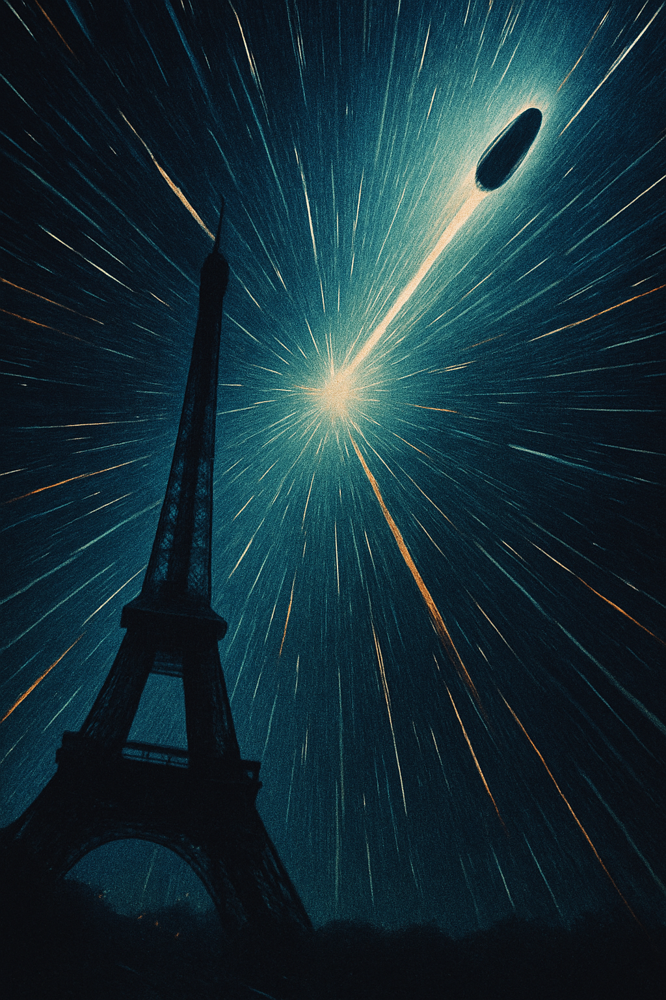

Retrofit
Aleksandar Gazibara

Taedium vitae
Kuda ide ovaj svet? Tehnologija i napredak, čemu? Da sam samo rođen koji vekranije. Da mogu da biram, rekao bih: 19. vek. A gde tačno? Pa, Pariz. Imam
utisak da je Pariz tog vremena bio centar svih zbivanja. Sigurno ga
nisu bez razloga zvali grad svetlosti.
Zamišljao je ruke umazane ugljem dok udiše pariški smog, a negde u daljini orkestar svira Debisija.
Osim toga, ako bih baš hteo da budem grandiozan - pomisli - u Parizu bih mogao da se upoznam sa Debisijem i Satijem!
Smejući se sam sebi, počeo je da razmatra ideju da napravi spravu za putovanje kroz vreme.
Kao profesor fizike i povremeni izumitelj, bio je siguran da će bar njegove hipoteze imati smisla. Ali, dobro se seća: prvi put kada je pomislio na takvu spravu, zamalo mu se oteo glasan smeh, iako je, kao i uvek, bio sam.
Pa ipak…
Ex machina
Noćima je duboko i ozbiljno razmišljao o putovanju kroz vreme, kao da je to stvarna naučna mogućnost. Sada je to poprimalo oblik opsesije. Već neko vreme bio je nezaposlen, dao je otkaz na katedri za fiziku, u svojim četrdesetim.Pomišljao je, pa čak i kada bi uspeo u svojoj nameri da otputuje u neko drugo vreme, najverovatnije nikome ne bi nedostajao.
U mislima je razvijao prvi prototip. Zabavljajući se, zaključio je da ta mašina svakako mora da bude dovoljno mala da bi mogao da je ponese — kako bi mogao i da se vrati.
Takođe je morala da postoji mogućnost za definisanje tačnog datuma i godine u kojoj želi da se nađe. Pa, to je već koncept.
Prošlo je nekoliko meseci otkako je prototip bio samo ideja, i sada je pred sobom imao pravu stvar. Brojčanike za datum i godinu, taster za aktivaciju, i svu ostalu naprednu tehnologiju u lako prenosivom pakovanju.
Bližio se trenutak. Uzimajući u obzir sve moguće rizike, odlučio je da taj dan, 1. april, posmatra kao mogući dan svoje smrti, i zato pozavršavao sve preostale obaveze. Napisao je čak i testament (kojim, zapravo, nije ostavljeno mnogo toga).
Sutra putujem — ili apri-li-li-li… pomisli.
„Kad je bal, neka je zabava. Da možda ipak odem na otvaranje Svetske izložbe? Samo da proverim datum — hm, 15. april. Skoro pa savršeno. Pomericu za dve nedelje, ali ću zato moći da prisustvujem otvaranju Ajfelovog tornja."
Iako iskreno uzbuđen, precizno je registrovao prizvuk ludila u tim svojim mislima.
In situ
Dolazio je sebi u kratkim navratima, nakon čega je opet gubio svest. Ne seća se jasno koliko je to dugo trajalo. Odjednom je primetio da je nag i to ga je dodatno uznemirlio. Oko njega — gomila ljudi, graja skoro nepodnošljiva, miris znoja i konjskog izmeta.Francuski, pomisli. Da li je moguće da sam ipak uspeo?
Krajičkom oka spazio je Ajfelov toranj i ostao zabezeknut. Neki prijatelji su mu jednom rekli da možeš da ga vidiš gde god da si u Parizu. Onda je ponovo izgubio svest.
Sledeći put se probudio u bolnici…
"Oh mon Dieu, il va bien", reče medicinska sestra u prolazu.
Inter bellum
Nakon nekoliko dana izašao je iz bolnice, sasvim oporavljen. Tamo su ga svi posmatrali kao neko čudo. Sprava je, srećom, bila netaknuta.Uspeo je i da poseti izložbu, i vidi Ajfelov toranj u punom sjaju. Impozantna građevina, iako su Parižani delovali pomalo zgađeno.
Danas razmišljaju drugačije, pomisli. A onda shvati kako je reč „danas“ u njegovom slučaju vrlo relativan pojam.
Učinilo mu se nekoliko puta da je video Debisija i Satija — prilike u frakovima, s leđa. Jedan pomalo zdepast, drugi visok i sa monoklom. Ali, nije mogao da zna da li su to stvarno oni.
U međuvremenu je iznajmio manji stan i nekoliko nedelja proveo radeći razne poslove u obližnjem bistrou. Ipak, nakon početnog oduševljenja, život u 19. veku ubrzano je počeo da ga zamara.
"Grad svetlosti, pih! A gde je svetlost? U lampama sa gasom? Gde je bojler? Kako se ovi ljudi kupaju? Kako peru veš? O internetu da ne govorimo. Ovaj život je nepodnošljiv."
Mea culpa
Nakon nekog vremena odlučuje da ponovo upotrebi svoju mašinu. Bio je nezadovoljan i sadašnjošću i prošlošću, a neka dalja budućnost bi samo mogla da bude još gora.Zato odluči da zatvori oči, nasumice podesi datum i pritisne taster za aktivaciju.
In absentia
Probudio se u nekom sasvim nepoznatom, skučenom prostoru ovalnog oblika. Kada se potpuno osvestio, čuo je tiho zujanje uređaja. Pridigao se i pogledao kroz elipsoidni prozorčić u samom centru. Ukazao mu se tamni beskraj kosmosa i po neka zvezda.Na spravi je pisalo: 1. april 2183.
“Kakva ironija", pomisli.
Zatim, u samom ćošku, spazi nešto nalik monitoru. Tek tada je shvatio da njegovo telo bestežinski levitira. Lako se odgurnuo i ugledao svoj lik.
Pa ipak, to nije bio samo odraz. Snimak je imao sekund i po zakašnjenja — kao da signal prelazi neki dalji put pre nego što se njemu konačno prikaže.
Još dugo je posmatrao ovaj prizor.
← Nazad na početnu